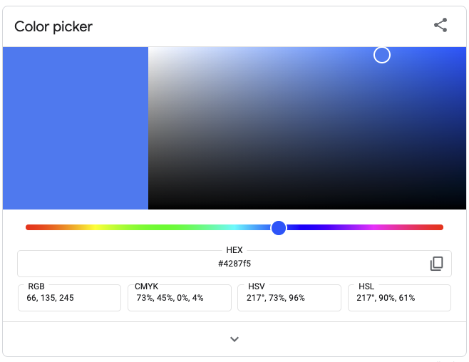

Playing with a 3D representation of RGB color space
May 28, 2022 · 889 words · 5 minutes read
I’m working on a color picking/finding game, and part of it will be asking the user to pick a color from a range of colors. This got me thinking: what are some ways we can represent RGB color space?
RGB
One way to think of colors, especially colors on computers, is as a combination of three different primary colors: Red, Green, and Blue. If we say how much of each color we want, we can build a color from the values. For example, maybe we want all Red and no Green or Blue - we could represent this as (100%, 0%, 0%), corresponding to (R, G, B). That would look like this:
That’s an OK red, but it gets more interesting when we mix in some other colors. For instance, here’s 100% red, 33% green, and 33% blue:
Now we’re talking!
2D, but with a spectrum
If you Google “color picker”, you get a widget that provides you with a spectrum of colors to pick from. I think these are pretty intuitive, since you’re able to see what colors are close and similar to your colors. That being said, it’s a little unintuitive how the actual values map to the layout on the grid - try clicking and dragging left and right, and see what the RGB values do.
 Give it a shot here.
The y-axis looks like it’s red, as going up and down on the far left and far right only changes the red value. But, go to the middle and go up and down, and all three values change. Put your picker in the middle, then change the spectrum from red to blue - you can see there are discrete sections where only one value or another is increasing. The display is intuitive, but the numbers aren’t!
3D RGB color space
Because each color is composed of those three separate values, you could imagine it as if it were a 3D chart, with one axis for red, one axis for green, and one axis for blue. As you go up to 100% for each axis, the color changes accordingly.
 SharkD, CC BY-SA 3.0 https://creativecommons.org/licenses/by-sa/3.0, via Wikimedia Commons
SharkD, CC BY-SA 3.0 https://creativecommons.org/licenses/by-sa/3.0, via Wikimedia Commons
You could, if you wanted to, actually make one of these cubes. That’s what Tauba Auerbach did in the RGB ColorspaceAtlas, where the pages in a book correspond to a slice of that cube, so that every color in the entire space is printed. Pretty neat!
How do we see this represented?
Oftentimes when working with computers and colors, you’ll want to pick a color from a selection of colors. An interesting question here is how the colors are represented — on one unhelpful end, we could just type in the color codes and see the color, while on the other end, we’d somehow fly through the 3D color space to find the right one. An interesting consideration is how well the representation lets you compare the color you’ve chosen with its colorful neighbors. If you’re just typing in an exact number, you won’t have any context of the colors around it. If you’re selecting from a spectrum, you’d have much more context, though this gets interesting when you think in 3D.
As a side note, we usually talk about each color ranging from 0 to 255, with each color represented by 8 bits. I’ll use percentages below, but keep that in mind for the actual code and color pickers.
Exploring in 3D
Let’s start with what looks like a very color picker, where you can pick a value for each color and see how it changes. As you go through, you can also visualize in the 3D space below, where one axis is for red, one is for green, and one is for blue. I’ll let you figure out which is which! Feel free to change the sliders and see how the color changes.
For an extra bonus, try enabling DVD screensaver mode below — you can still mess with the sliders while it’s running.
Not bad! It’s almost like an ant crawling through the inside of that cube above, reporting back the color it finds at each position.
But I think there are some key drawbacks with this single-color visualization:
- It’s hard to visualize what changing a value does to the color, and you can’t see the neighbors before you select the color.
- You’re only able to see the exact color at a time, so searching is more difficult.
- You have three axes to change, but you’re only able to do one slider at a time.
- DVD mode repeats itself frequently
I wonder what this could look like if you had a plane of color across two of the axes, then adjusted the third axis? It would kind of be like fluidly switching between pages in the book above.
This is already rambling enough, so I’ll have to explore that another time :)
You can see the source code here, though it’s very rough around the edges. It’s built with D3 and X3DOM, though it was mostly scraped together from examples.